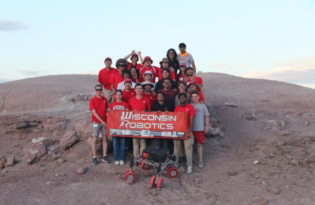

Rover GUI & Facial Recognition

Overview
As a software engineer on the Wisconsin Robotics team at UW–Madison, I developed two key systems for the University Rover Challenge (URC). The URC is an international competition organized by the Mars Society at the Mars Desert Research Station in Hanksville, Utah, where student-built rovers tackle missions simulating future Mars exploration — including soil analysis, equipment servicing, autonomous navigation, and sample retrieval.
Our team of ~60 members — mechanical engineers, electrical engineers, computer scientists, physicists, and biologists — placed 12th out of 38 finalists and 102 teams worldwide, a new team record.
Web-based control GUI
- Developed a custom web-based GUI for real-time robot control and monitoring
- Integrated ROS topics through roslibjs and rosbridge WebSockets for live command publishing, sensor visualization, and interactive operation
- Operators could control the rover from any browser with no local ROS installation required
- The GUI supported multiple mission profiles — arm manipulation, autonomous waypoint navigation, and science instrument control
Facial recognition system
- Built a Raspberry Pi-based facial recognition system using OpenCV and Python
- Performed real-time face detection and identity verification for the autonomy mission tasks
- Optimized for low-power embedded hardware while maintaining real-time frame rates in desert field conditions
Competition
The URC tests rovers across four missions: science (soil sampling and life detection), equipment servicing (repairing a mock astronaut lander), extreme retrieval (recovering geological samples from up to 1 km away), and autonomous navigation (traversing rock fields to find markers). Every mission demands tight coordination between software operators and the mechanical platform.